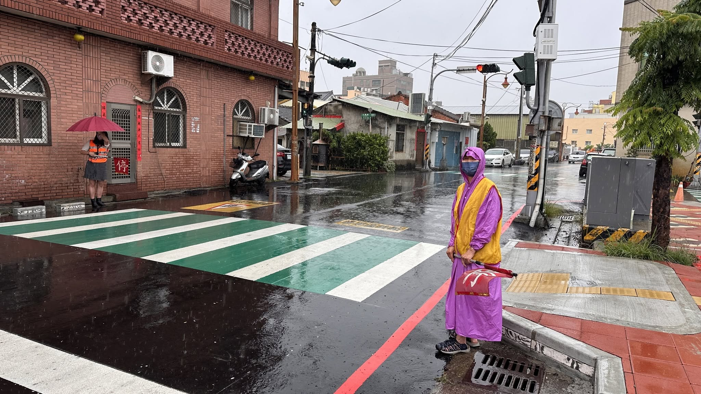
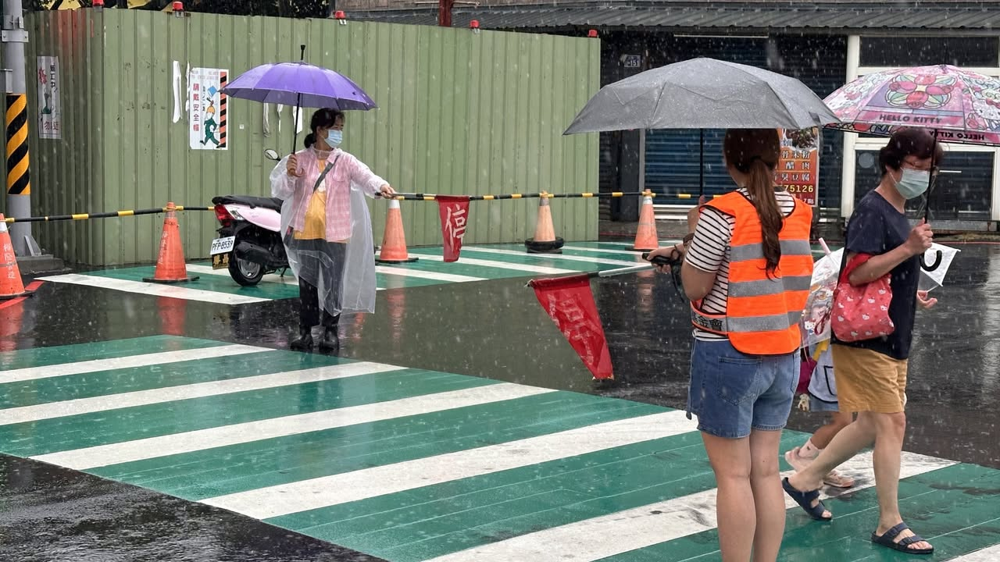

Grateful for those who walk with us, rain or shine.
Whether under the blazing summer sun or through pouring rain, Wenkai's teachers and crossing guard volunteers always show up right on time, guarding every step of our students' walk to school with love and responsibility — so that every child can make it safely and calmly onto campus.
A grandmother who wouldn't budge.
It rained heavily all morning today, yet crossing guard volunteer Grandma Chiang Huang Shu-hui still stood at her post in her raincoat. When people asked if the rain made things hard for her, she simply smiled and said: "What's wrong with rain? I just wear my raincoat. It's fine even if I get a little wet."
A simple sentence, a selfless spirit.
Her simple, down-to-earth words carry a spirit of selfless devotion, and a deep tenderness for the children in her care. The rain may soak her clothes, but it can never dampen her enthusiasm for keeping the children safe.
We are grateful to all of Wenkai's teachers and crossing guard volunteers for their long-standing dedication. Because of your quiet watch, our children can grow up safely and happily. Your love and persistence are the warmest, most moving scenery on our campus.

風雨無阻的守護，感恩有您同行
無論是炎炎酷暑，還是滂沱大雨，文開的師長與導護志工們總是準時站上崗位，用愛與責任守護著孩子們上學的每一步路，只為了讓每一位文開孩子都能平安、安心地走進校園。
今天一早大雨不斷，導護志工蔣黃淑惠阿嬤依然穿著雨衣堅守崗位。當大家關心她是否辛苦時，阿嬤笑著說：「下雨有什麼關係，穿著雨衣就好了，淋濕也沒有關係。」
一句樸實的話語，道出了無私奉獻的精神，也讓人深深感受到那份對孩子們的疼惜與守護。風雨或許會打濕衣裳，卻澆不熄阿嬤守護孩子安全的熱忱。
感謝文開所有師長與導護志工長期以來的付出，因為有您們默默守護，孩子們才能平安快樂地成長。您們的愛心與堅持，是校園裡最溫暖、最動人的風景。
Tap 🔊 to listen · 點喇叭聽發音
A crossing guard volunteer stood in the rain.一位導護志工在雨中站崗。
She helps students cross safely at the crosswalk.她協助學生安全通過斑馬線。
She holds a red flag to guide the students.她拿著紅色旗子引導學生。
Volunteers protect children on their way to school.志工保護孩子們的上學路。
She wore a raincoat and kept standing guard.她穿著雨衣，依然堅守崗位。
She never leaves her duty, even in the rain.即使下雨，她也從不離開崗位。
Her only concern is the children's safety.她唯一在乎的是孩子們的安全。
She stands watch rain or shine.她風雨無阻地站崗。
Match the word to its meaning
把英文和中文配對
Matched 配對成功：0 / 8